6. DATA WAREHOUSE
Data Warehouse¶
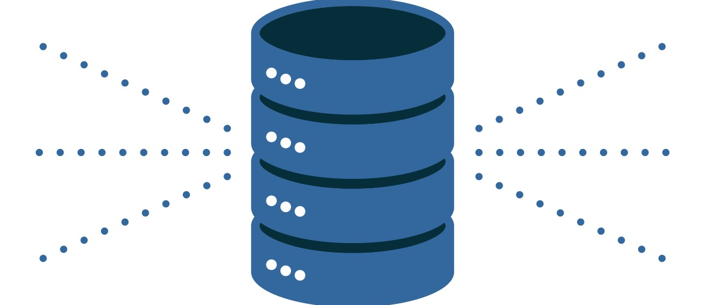
- Es una gran base de datos, normalmente medida en gigabytes o terabytes.
- Es un proceso para recopilar y administrar datos de diversas fuentes para proporcionar información empresarial significativa (data warehousing).
- Conecta y analiza datos comerciales de fuentes heterogéneas.
- Es el núcleo del sistema de Business Intelligence que está diseñado para el análisis y generación de informes de datos.
- Es un proceso de transformar datos en información y ponerlos a disposición de los usuarios.
- Contiene datos de calidad como datos de clientes, empleados o ventas.
Características de los Data Warehouse ¶
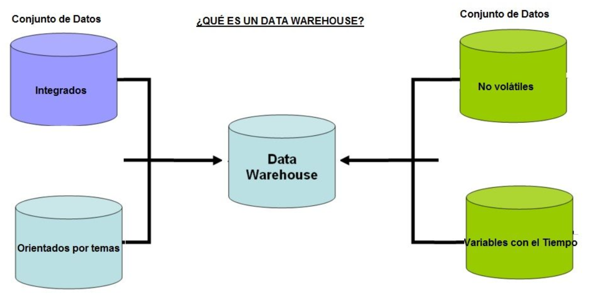
Comparación modelo transaccional y analítico ¶
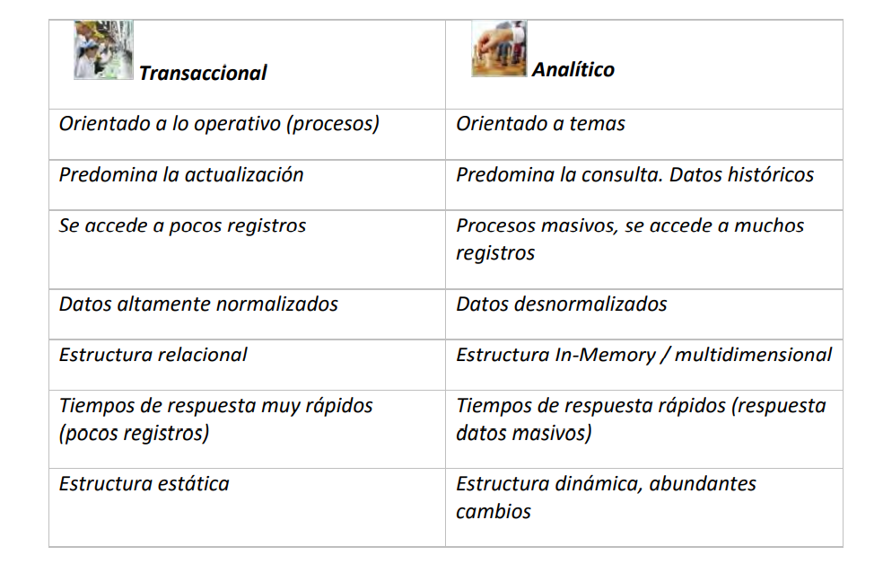
Data Mart ¶
Según Kimball, “Un Data Mart es un conjunto de datos flexible, idealmente basado en el nivel de granularidad mayor que sea posible, presentado en un modelo dimensional que es capaz de comportarse bien ante cualquier consulta del usuario. En su definición más sencilla, un data mart representa un único proceso de negocio.”
Un proceso de negocio es un conjunto de tareas relacionadas lógicamente, llevadas a cabo para lograr un resultado de negocio definido.
Data Mart VS Data Warehouse ¶
-
La única diferencia es en cuanto al alcance.
-
Un Data Warehouse es un sistema centralizado con datos globales de la empresa y de todos sus procesos operacionales mientras que un Data Mart es un subconjunto temático de datos, orientado a un proceso o un área de negocio específica. Por ejemplo, a pedidos de clientes, a compras, a inventario de almacén, etc.
-
La existencia de un Data Warehouse no descarta la existencia de Data Marts ni viceversa. Es decir, puede haber organizaciones que tengan sólo un Data Warehouse, que sólo tengan Data Marts, o que tengan un Data Warehouse y Data Marts.
ETL¶
En muchas ocasiones, la información no pasa directamente de las fuentes al Data Mart o Data Warehouse, sino que lo hace a través de unas bases de datos intermedias, que son necesarias dada la complejidad y disparidad de las fuentes.
Los datos, antes de entrar en el Data Mart o Data Warehouse, se almacenan en un área de staging y/o un ODS (Operational Data Store).
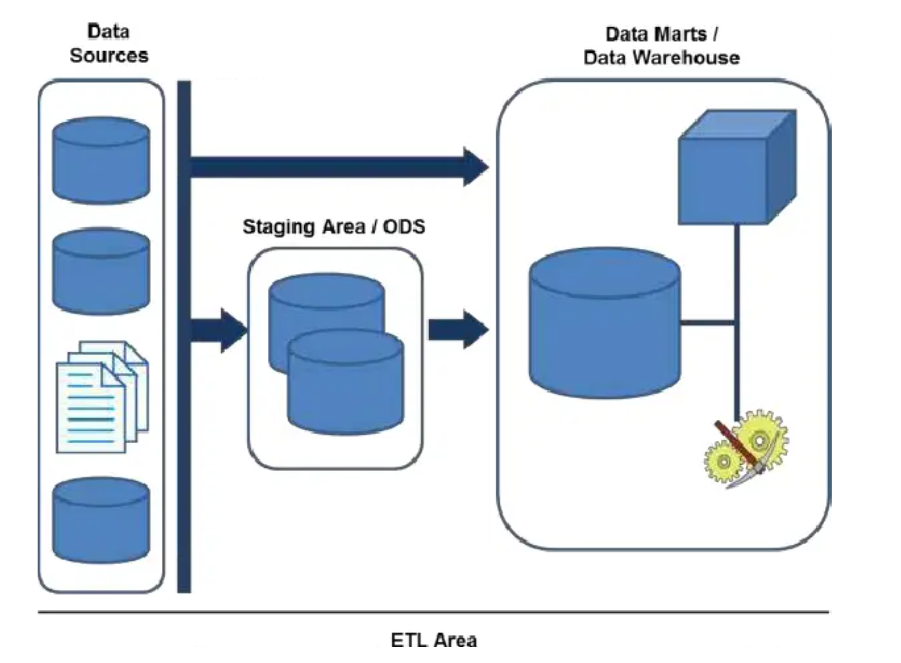
Un área de staging es un área temporal que se encuentra en el flujo de datos entre las fuentes y el Data Mart o Data Warehouse con el fin de facilitar la extracción de datos, de realizar tareas de limpieza (data cleasing) o de mejorar la calidad de los datos.
Un ODS es un área que va a dar soporte a los sistemas transaccionales, desde los que se alimenta con una periodicidad muy baja, y sirve como base de datos de consulta, a la que se conectarn herramientas de reporting con el fin de que el sistema transaccional tenga una menor carga de trabajo.
Metodologías ¶
Existen muchas metodologías de diseño y construcción de un Data Warehouse. Cada fabricante de software de inteligencia de negocios busca imponer una metodología con sus productos. Sin embargo, se imponen entre la mayoría dos metodologías, la de Kimball y la de Inmon.
- Metodología Kimball: Ralph Kimball sigue una metodología bottom-up y una estructura desnormalizada. Se define el diseño en detalle de partes individuales para luego enlazarlas entre ellas para formar un sistema completo. Es decir, con la metodología de Kimball se van diseñando a medida, según las necesidades de los departamentos, los diferentes Data Marts, para unirlos y formar el Data Warehouse de la empresa.
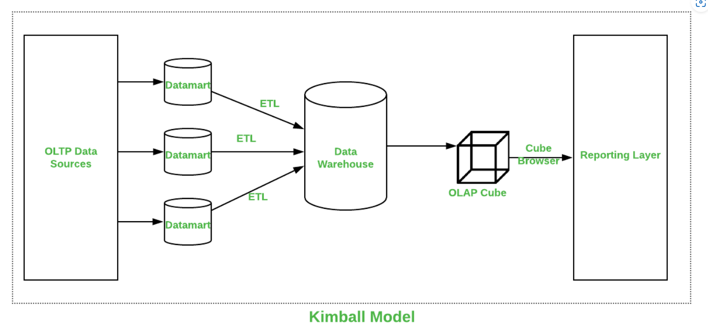
- Metodología Inmon:se caracteriza por tener un repositorio central de datos único. Se basa en la metodología top-down, que es aquella que toma decisiones partiendo de las variables más globales para ir descendiendo hasta las más específicas. Es decir, Inmon parte de un almacén de datos global del que se irán nutriendo los diferentes Data Marts, evitando así las diferentes inconsistencias que puedan existir entre diferentes departamentos.
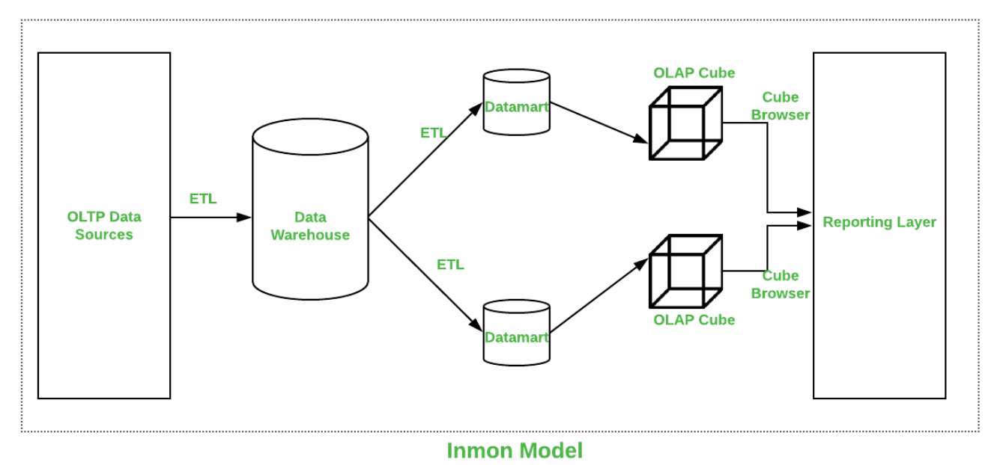
- Alternativa: Data Vault: es una técnica híbrida entre el modelo normalizado y el modelo dimensional donde se toman lo mejor de cada una y se solucionan sus defectos. La definición que da Dan Listedt es la siguiente:
“Data Vault es un conjunto de tablas normalizadas orientadas al detalle, con seguimiento histórico y vinculadas de forma única, que dan soporte a una o más áreas funcionales del negocio. Se trata de un enfoque híbrido que engloba lo mejor de la tercera forma normal (3NF) y el esquema en estrella. El diseño es flexible, escalable, consistente y adaptable a las necesidades de la empresa. Se trata de un modelo de datos diseñado específicamente para satisfacer las necesidades de los almacenes de datos empresariales actuales.”
Comparativa entre Inmon y Kimball:
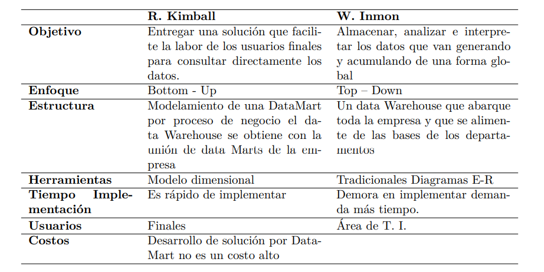
Modelado ¶
- Esquema en estrella (star schema): hay una única tabla central, la tabla de hechos, que contiene todas las medidas y una tabla adicional por cada una de las perspectivas desde las que queremos analizar dicha información, es decir por cada una de las dimensiones.
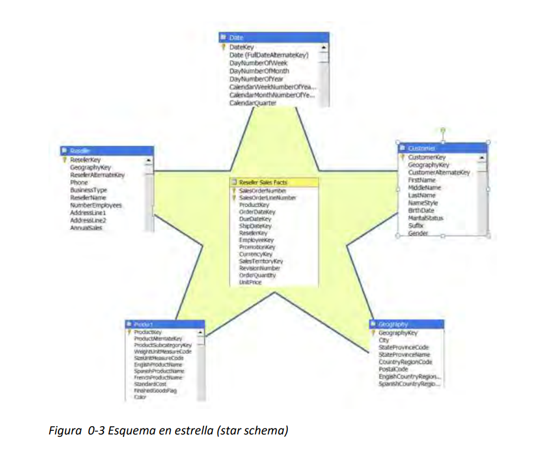
- Esquema en copo de nieve (snowflake schema). La diferencia es que algunas dimensiones no están relacionadas directamente con la tabla de hechos, sino que se relacionan con ella a través de otras dimensiones. También tenemos una tabla de hechos, situada en el centro, que contiene todas las medidas y una o varias tablas adicionales, con un mayor nivel de normalización.
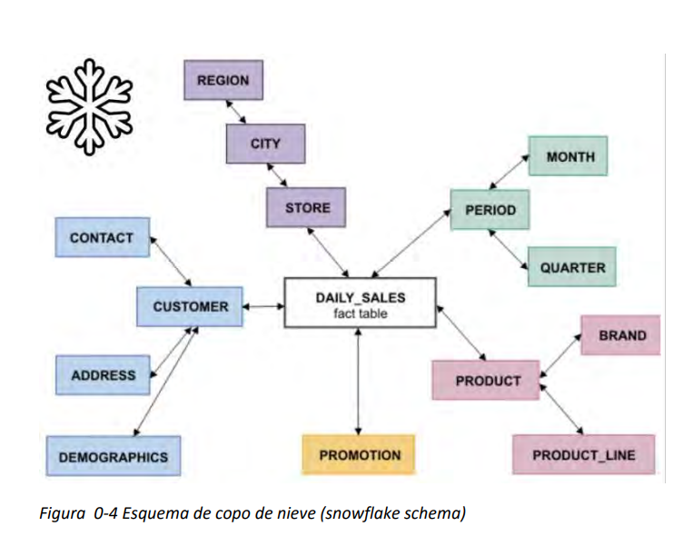
- Esquema híbrido. Tiene parte en estrella y parte en copo de nieve.
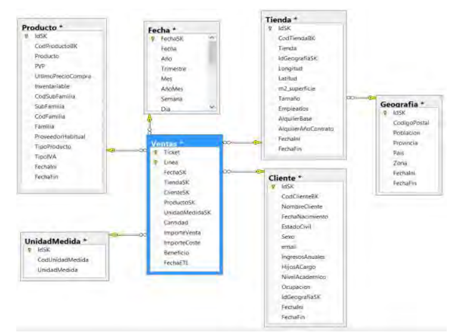
Modelado Dimensional ¶
- Utilizado en la mayoría de las soluciones de BI.
- Es una mezcla de normalización y desnormalización, llamada Normalización Dimensional.
- Se utiliza tanto en el diseño de Data Marts como de Data Warehouses.
-
Hay dos tipos de tablas:
-
Tablas de Dimensión (Dimension Tables)
-
Tablas de Hechos (Fact Tables)
-
Tablas de Hechos ¶
-
Son tablas que representan detalles del proceso de negocio a analizar, por ejemplo, las ventas, las compras, las incidencias recibidas, los pagos, los apuntes contables, los clics sobre nuestro sitio web, etc.
-
Contienen datos numéricos y medidas (métricas).
-
Contienen también elementos (claves externas) para contextualizar dichas medidas, como por ejemplo el producto, la fecha, el cliente, la cuenta contable, etc.
Elementos que las componen:
Clave principal: identifica de forma única cada fila.
Claves externas: apuntan hacia las claves principales de cada una de las dimensiones que tienen relación con dicha tabla de hechos.
Medidas: representan columnas que contienen datos cuantificables, numéricos, que se pueden agregar como por ejemplo, cantidad, importe, precio, margen, etc.
Metadatos y linaje: permite obtener información adicional sobre la fila, por ejemplo, que día se incorporó al Data Warehouse, de qué origen proviene, etc.
Tablas de Dimensiones ¶
- Las tablas de dimensiones almacenan una serie de atributos o características, por las cuales podemos agrupar, rebanar o filtrar información.
- Nos permiten contextualizar los hechos, agregando diferentes perspectivas de análisis.
- Algunas veces los atributos están organizados en jerarquías que permiten analizar los datos de forma agrupada. Por ejemplo, en una dimensión Producto podemos encontrar una jerarquía formada por los atributos Categoría, Subcategoría y Producto.
- Tienen una clave principal diferente que se conoce con el nombre de clave subrogada.
- Clave subrogada es un identificador único que es asignado a cada fila de la tabla de dimensiones, en definitiva, será su clave principal.
- Clave de negocio es una clave que actúa como primary key en nuestro origen de datos y es con la que el usuario está familiarizado, pero no puede ser clave principal en nuestra tabla de dimensiones porque se podrían producir duplicidades.
Técnica de modelado dimensional ¶
En el libro “The datawarehouse toolkit” de Ralph Kimball, ofrece una técnica de modelado que consiste en 4 pasos:
-
Seleccionar el proceso: El primer paso sería seleccionar el proceso a modelar. ¿En qué actividades del negocio nos interesa focalizar? Los modelos de negocio son simplificaciones de la realidad que nos sirven para comprender qué está sucediendo. Si está bien definido nos permitirá responder preguntas claves de la organización. El o los procesos a modelar se definen de acuerdo al objetivo. Seguramente queramos modelar más de un proceso, cada uno con su tabla de hechos y dimensiones, y cada uno de ellos con sus propios objetivos e indicadores de gestión.
-
Establecer el nivel de granularidad: Una vez identificado el proceso, tenemos que conocer qué información disponemos para analizarlo, definir el nivel de detalle que vamos a registrar en la tabla de hechos. Por ejemplo podemos definir las ventas en por mes, por producto, o bien las ventas por día por vendedor. Hay que tener en cuenta que si se define un grano más grueso (por ejemplo, ventas por mes), no podrá luego consultarse las ventas por día. Por eso se recomienda utilizar una granularidad más fina, de manera de poder responder a consultas con mayor nivel de detalle.
-
Identificar las dimensiones: Definida la granularidad, se enumeran las dimensiones asociadas. Las más comunes son, tiempos, lugar, responsable, sector, etc. Es muy importante nombrar las dimensiones de manera que sean simples de identificar, como también así sus atributos.
-
Identificar los hechos: Los hechos son los valores numéricos asociados al proceso que queremos medir. Por ejemplo en un proceso de compras, serán la cantidad vendida y el valor unitario. En un proceso de atención de reclamos podría ser el tiempo en segundos que demoró en ser atendido, el tiempo en segundos que tomó la atención, etc.
Cubos OLAP ¶
El data warehouse define su estructura de datos basándose en un modelo de datos multidimensional.
El modelo de datos multidimensional es una representación "conceptual" de los datos a tratar en forma de cubos. El cubo nos permite modelar los datos y visualizarlos en múltiples dimensiones.
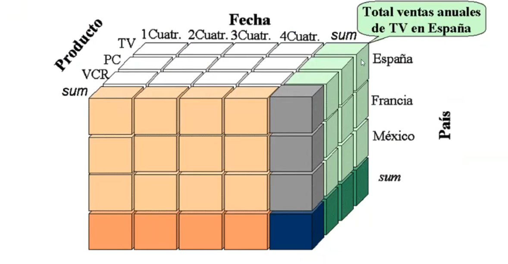


Roll up (drill-up): resumir los datos, es decir, subir en la jerarquía o reducir las dimensiones.

Drill down (roll down): es bajar en la jerarquía o introducir nuevas dimensione.